Mundial de Clubes
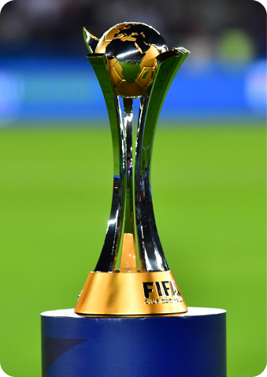Taça Libertadores
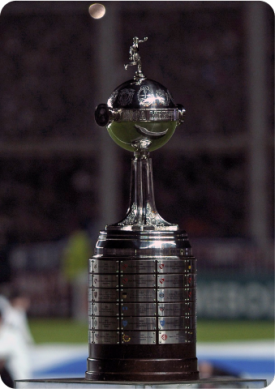Champions League
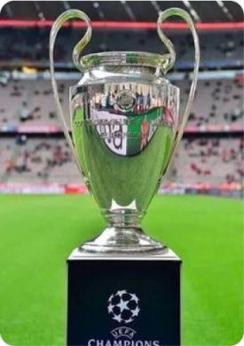Campeonato Brasileiro
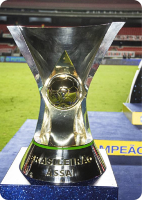Venha conhecer a história e algumas características sobre alguns campeonatos de futebol
Mundial de Clubes
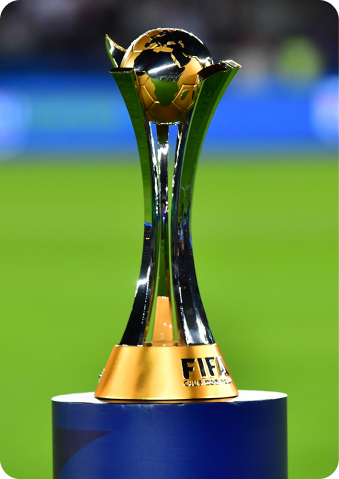Taça Libertadores
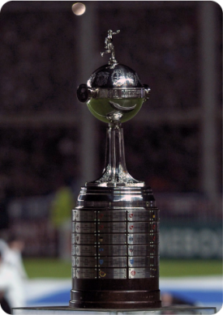Champions League
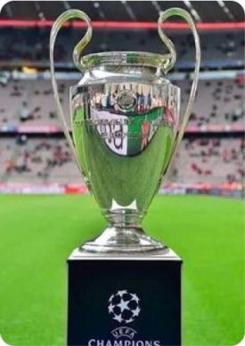Campeonato Brasileiro
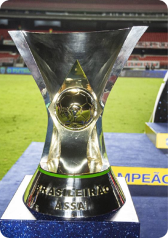O campeonato Mundial de Clubes ou Campeonato do Mundo de Clubes é uma competição de futebol organizada pela FIFA e disputada entre clubes que forem campeões dos respectivos campeonatos de suas confederações continentais, no caso da América a CONMEBOL, América Central e do Norte a CONCACAF, Na Europa a UEFA, na África a CAF, na Ásia a AFC e na Oceania a OFC, além do time do país sede. Em 1999 a FIFA anunciou que em 2000, realizaria o primeiro mundial de clubes, o qual foi vencido pelo Corinthians, que hoje contém dois títulos de campeões mundiais (2000 e 2012).
O novo formato que será imposto pela FIFA em 2021 na China conterá 24 países, sendo oito clubes europeus, seis clubes da América do Sul e o restante dividido entre os outros continentes. Diversos prêmios são distribuídos no final da competição referente ao rendimento do atleta ou da equipe dentro daquela competição. Além da premiação de artilheiro, é colocado em um pódio os três melhores jogadores, O melhor goleiro ganha o prêmio de Luva de ouro e o time que te o melhor “comportamento”, ou seja, aquele que menos cometeu faltas ganha o prêmio Fair Play.
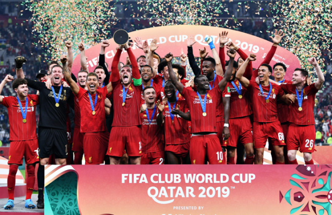A Copa Libertadores da América ou Taça Libertadores da América é o principal campeonato entre os clubes da América do Sul organizada pela CONMEBOL. A Competição tem mais de 60 anos e já conteve muitos formatos, hoje em dia, todos os países podem ter 4 times representantes, a Argentina e o Brasil têm seis e sete clubes representantes, respectivamente. O torneio é constituído por inicialmente um mata a mata com 19 times, os 4 sobreviventes vão para a segunda fase com os outros. Na segunda fase os times são distribuídos em grupos e os dois melhores de cada grupo passam para a próxima fase. Na terceira fase ocorre as quartas, as semis e a final do campeonato, onde o time vencedor é decidido e garante seu lugar no mundial de clubes.
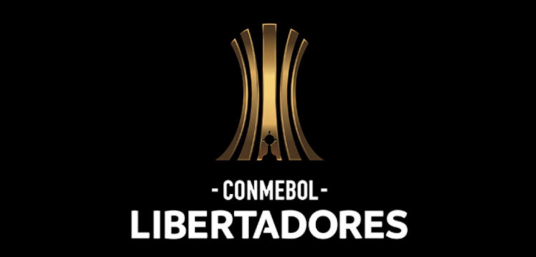No Brasil, um total de 10 times já conquistaram pelo menos um título, alcançando a marca de 2º país com mais títulos de Taça Libertadores. A taça é divida em partes, no topo da taça, há uma figura representando um jogador de futebol se preparando para chutar. A metade superior do globo abaixo do jogador leva os dez brasões dos países membros da CONMEBOL. Na barra do meio da esfera era localizada a inscrição "Campeonato de Campeones de Sudamerica". E na parte inferior o time venceu, com o nome do clube vencedor, a cidade e a nação de origem da equipe. A premiação é muito boa para aqueles que vão conseguindo passar as fases até chegarem na final, que se ganharem levam para casa 2,3 milhões de dólares
A Liga dos Campeões da UEFA ou UEFA Champions League é uma competição que ocorre todos os anos entre os times da Europa, é organizado UEFA. É um torneio muito prestigiado por se tratar do futebol europeu, um dos melhores do mundo, onde a liga é constituída pelos mais bem colocados dos campeonatos locais da temporada anterior. A final da edição 2012-2013 chegou a mais de 360 milhões de telespectadores. O campeonato é configurado da seguinte maneira, ocorre uma qualificação onde 10 países se juntam aos 22 já constituídos e os times são divididos em 8 grupos.
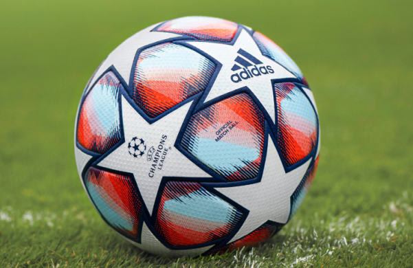Os dois melhores de cada grupo passam para a próxima fase, dai começam os mata a matas (oitavas, quartas, semis e final). O vencedor, assim como na libertadores, garante uma vaga ao Mundial de Clubes. Os times que não conseguiram entram na Champions League, conseguem disputar outro campeonato criado pela própria UEFA chamado de Liga Europa da UEFA. Dentre os clubes mais vencedores da Champions League, em primeiro lugar se encontra o Real Madrid, com 13 títulos, sendo o único tricampeão no novo modelo adotado pela UEFA na temporada de (1992/1993).
O Campeonato Brasileiro de Futebol, mais conhecido como Brasileirão é o principal campeonato profissional de futebol do Brasil, contendo 4 séries (A, B, C e D) com mais de 100 times ao todo. O campeonato é organizado pela CBF e tem o sistema de pontos corridos, ou seja, no final do campeonato quem tiver a maior pontuação é o vencedor. As partidas são disputadas em jogos de ida e de volta, ou seja, na série A como contém 20 times, são 38 rodadas. O campeonato ocorre durante quase o ano todo, começa em julho e termina somente em dezembro. Para se qualificar para outras competições, como, por exemplo, a libertadores, é necessário fazer com que o time esteja entre os 6 primeiros clubes na tabela de classificação, sendo que o 5º e 6º tem de passar primeiro por uma qualificatória.
No campeonato brasileiro, sempre houve muitos imprevistos, zebras e até mesmo goleadas absurdas, como, por exemplo, no ano de 1983, quando o Corinthians derrotou o Tiradentes por 10 x 1, sendo uma das maiores goleadas na história do campeonato. Embora aconteçam essas situações, o campeonato brasileiro é um dos mais difíceis do mundo, onde o nível de qualidade é altíssimo e praticamente todos os times tem o mesmo nível, o que faz com que o campeonato se torne mais concorrido e disputado. Segundo a Federação Internacional de História e Estatísticas do Futebol no relatório de 2020, o campeonato brasileiro ficou apenas atrás do campeonato inglês, a Premier League. E também é um dos mais assistidos, sendo transmitido para mais de 150 países.
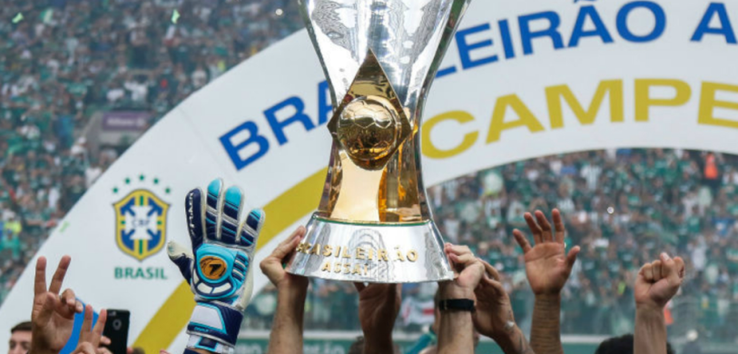